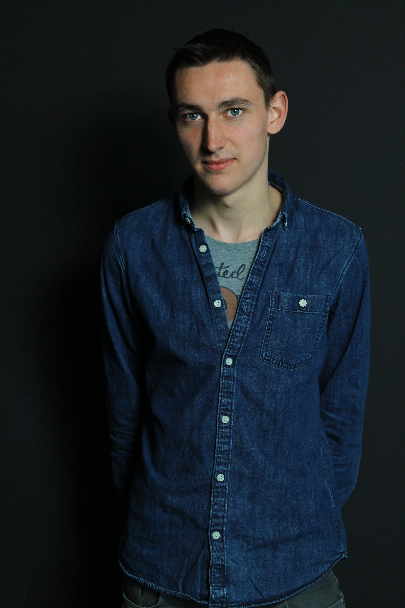

Welkom
Op deze website kan u alles vinden over Stijn Cornelis. Een student grafische en digitale media.
About me
Ik ben Stijn Cornelis, een student grafische en digitale media. Ik volg deze richting op Artesis Plantijn hogeschool, als afstudeerrichting heb ik gekozen voor crossmedia ontwerp. Zo kan ik mijn creativiteit uiten op verschillende media en leer ik kennis maken met verschillende tools. Ook in mijn vrije tijd ben ik creatief bezig door URBEX, of beter gezegt urban exploration. Hierbij ga ik foto's nemen in verlaten gebouwen samen met een vriend. Je kan enkele resultaten hiervan terugvinden in mijn portfolio .


Grafische
De grafische sector is een industrie waar ik me in kan vinden. Zo ben ik zelf zeer gevoelig aan een mooie en verzorgde layout.